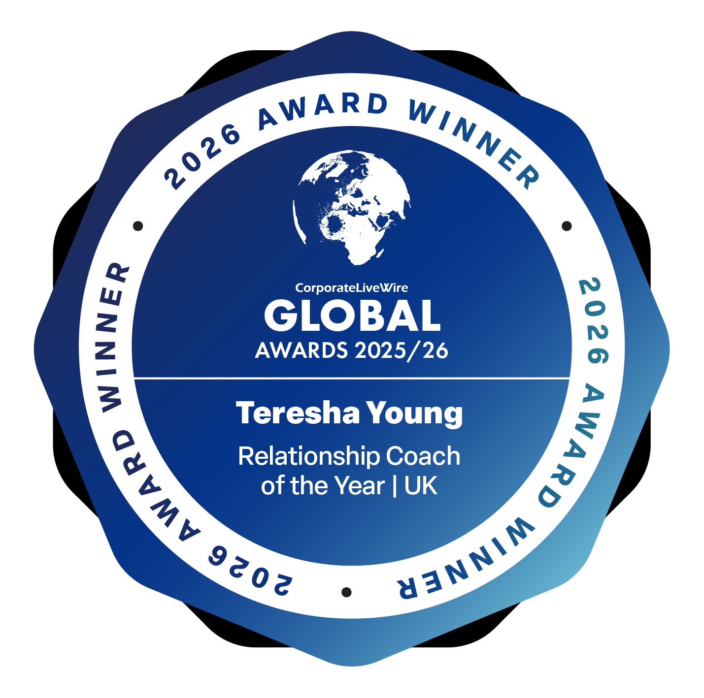
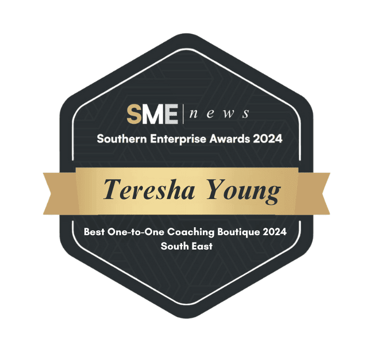

For Organisations
Support for people-first workplaces
For HR, People, L&D and wellbeing teams, and the leaders and employee communities they serve — helping people communicate, regulate and work better together.
Explore support for organisations →Relationship & Emotional Well-being Expert
Teresha Young helps organisations and individuals strengthen emotional well-being, communication and connection through practical, human-centred coaching and training.
Recognised expertise


How can I help?
For Organisations
For HR, People, L&D and wellbeing teams, and the leaders and employee communities they serve — helping people communicate, regulate and work better together.
Explore support for organisations →Private Coaching
Relationship coaching, personal growth and emotional well-being support for individuals working through patterns, communication and connection.
Explore private coaching →Media & Speaking
Expert commentary, interviews, podcasts, keynotes and event contributions on relationships and emotional well-being.
Explore media & speaking →For organisations
Healthy workplaces depend on more than policies. They depend on how people communicate, regulate emotion, navigate pressure, establish boundaries and relate to one another.
Teresha works alongside HR, People and wellbeing teams to help organisations recognise and address these dynamics directly — not as an abstract wellbeing add-on, but as a practical part of how a workplace functions.
Trusted by
Channel 4 · Mind
Client logo marks for Channel 4 and Mind are not yet available in the asset library — see docs/open-decisions.md#7. This text-only mention will be replaced with approved logos once supplied and usage is confirmed.
For organisations
In their words
“An approved organisational testimonial has not yet been supplied for this space. This box is a development placeholder only and must not be read as real client feedback.”
See data/testimonials.json (category: "organisations").
Why Teresha
Teresha's authority comes from credentials, recognition and range — not just years in a single role.
A supporting framework
A quiet reference point behind Teresha's work with both organisations and individuals.
Private clients
Relationship patterns, self-awareness, emotional well-being, communication, boundaries and confidence — explored one-to-one, at a pace that respects where you're starting from.
Media & speaking
Teresha contributes expert commentary on relationships and emotional well-being for journalists, broadcast and podcast producers, and event and conference teams.
Featured in
The podcast
Conversations on relationships and emotional well-being, with guests including Paul C. Brunson, Susan Winter and Charlene Douglas.
A place to start
Practical, grounded guidance on relationships and emotional well-being, sent directly to your inbox.
Whether you're exploring support for your organisation, looking for private coaching, or inviting Teresha to contribute to a conversation, you're welcome to get in touch.